Core · Video walkthrough
Review inventory setup and record stock movements
Review a prepared catalogue item and saved lot, verify recorded receipt/transfer/personnel issue results, interpret a partial-return balance, and inspect alert/report boundaries.
Before you begin
- Access to the intended department Inventory workspace and the relevant catalogue, stock, transfer or issue permissions.
- An authorized training item, lot and actual intended source/destination holders.
- A department process for physical verification, controlled items, stock differences and returns; this example uses ordinary fictional bulk consumables.
Chapters
- Locate stock and holders
- Choose tracking deliberately
- Review catalogue identity before saving
- Read the saved lot and expiry
- Record a reviewed receipt and verify it
- Transfer between the intended locations
- Audit the recorded movement in History
- Issue stock to a named person
- Recognize a partial return result
- Reconcile the dated balance snapshot
- Read the actual alert state
- Choose a report and preserve the workflow boundaries
Watch the walkthrough
Step 1
Locate stock and holders
In Core, Inventory separates the item catalogue from what the department currently holds. On hand provides Items and Location filters, while Unit and Person lookups help identify a particular holder. Start by choosing the right item and location before interpreting a quantity. This walkthrough follows one fictional training consumable through recorded software movements, rather than claiming that anyone physically inspected or transported supplies.

Practice
Locate the item and holder filters; confirm the intended stock context before changing anything.
Step 2
Choose tracking deliberately
The Items tab lists catalogue entries and their Tracking mode and Status. New item opens the catalogue workflow. On How it is tracked, this example uses By quantity with Track lots and Expiration required selected. Controlled substance and Kit item remain off. Decide how an item should be tracked before stock exists; later changes can be restricted. Industrial teams can apply the same distinction to bulk consumables and individually tracked equipment.
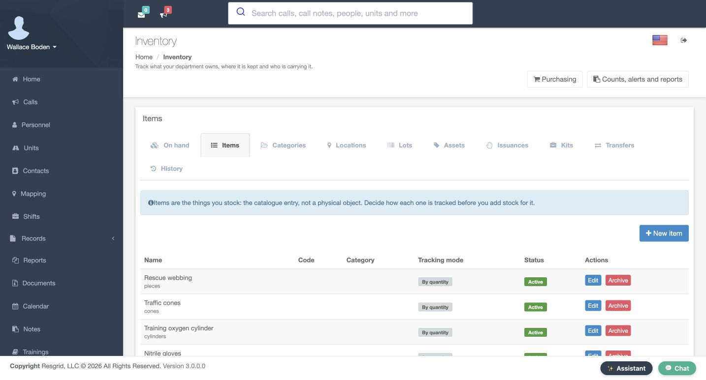
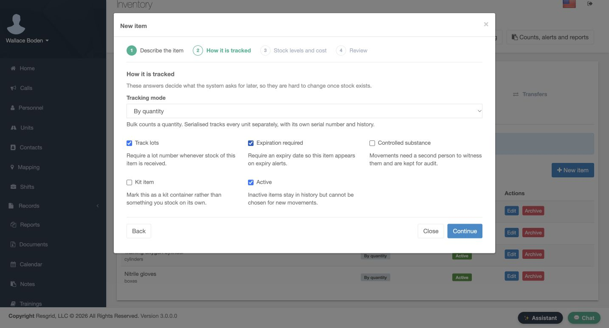
Practice
Review the displayed tracking choices for an authorized training item; do not enable controlled or kit behavior merely for practice.
Step 3
Review catalogue identity before saving
The Review page brings the prepared item together: Academy training batteries, measured in packs, with its code and description. It also shows minimum stock five, reorder point eight, and the fictional unit cost. Read these values before Save. A catalogue entry describes the item; it does not itself receive twenty packs or prove a physical purchase. The next screens use that item in an existing saved lot and stock movement.
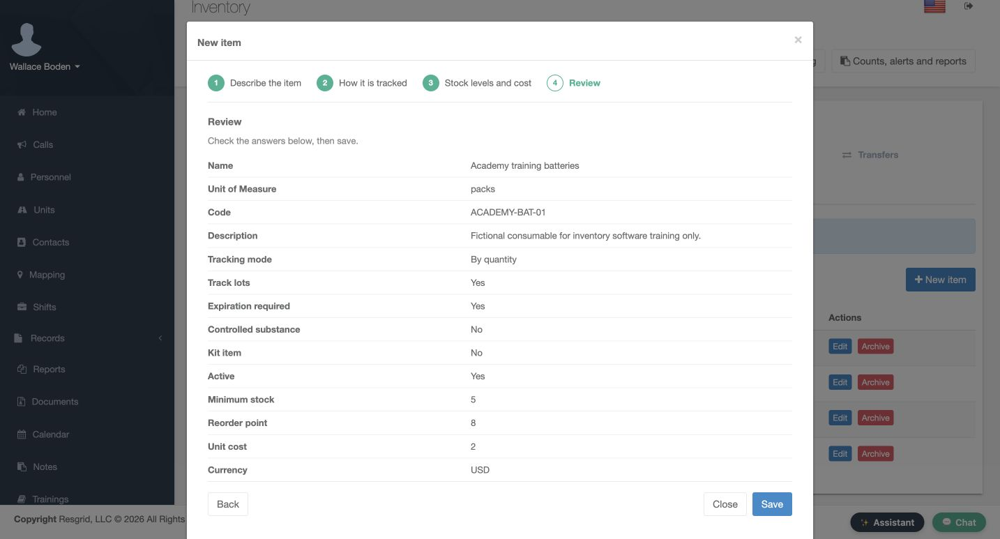
Practice
Compare the prepared catalogue review with your intended tracking policy before saving; distinguish catalogue setup from receiving stock.
Step 4
Read the saved lot and expiry
Lots identifies batches separately from quantities. The saved ACADEMY lot A row belongs to Academy training batteries and displays a November thirtieth expiry. New lot is available for creating another batch, but this view demonstrates the saved row. Check the lot and expiry when recording a movement so that later stock history refers to the intended batch. Creating a lot alone does not add stock.
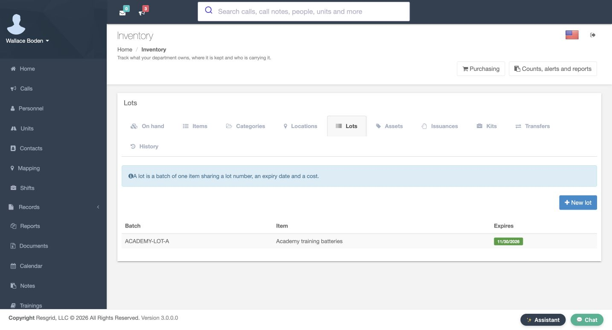
Practice
Read the saved batch identity and expiry; keep lot creation separate from receiving a quantity.
Step 5
Record a reviewed receipt and verify it
In Adjust stock, the prepared Review shows Receive, the training item and lot, Station as the destination, and Amount twenty. Its note clearly identifies a software exercise. Read the complete movement and choose Record movement only when it matches the intended receipt. The filtered On hand result then shows twenty packs at Station. That stored balance is the result of the receipt, rather than proof supplied by the preparation screen alone.
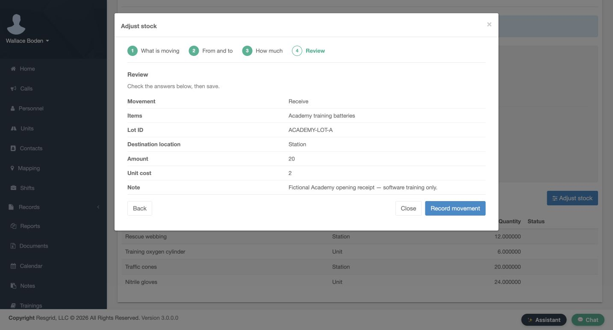
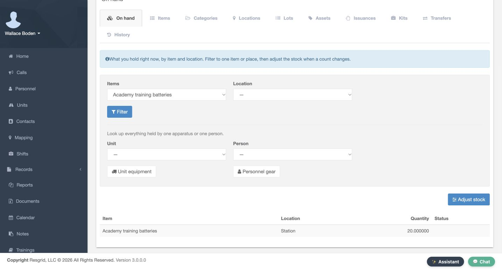
Practice
Compare the receipt review with the posted item/location quantity before continuing to another movement.
Step 6
Transfer between the intended locations
New transfer reviews the same item and lot, with Station as Source location, Unit as Destination location, and Amount five. Confirm both ends before Record movement. A generic location label does not identify a particular apparatus by itself. The Transfers list then shows the saved Station-to-Unit move. Search and rescue or wildland crews can use this pattern for a documented restock, while keeping software movement distinct from actual delivery.
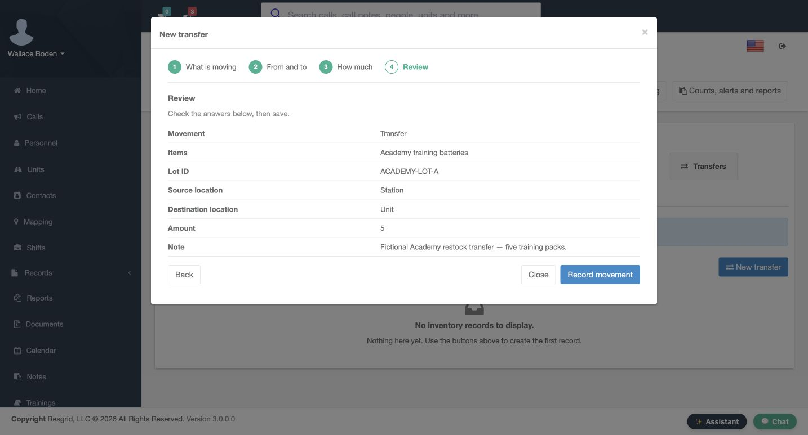
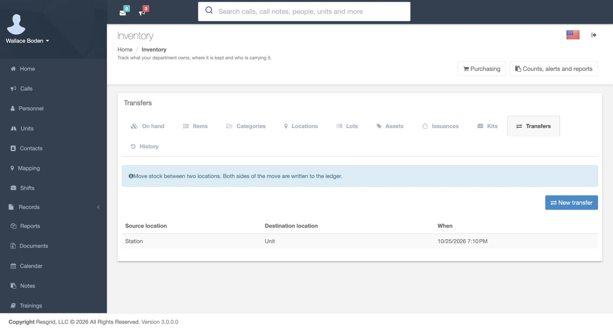
Practice
Review both holders and the amount; verify the saved transfer without assuming the generic Unit label names your apparatus.
Step 7
Audit the recorded movement in History
History shows the recorded Receive of twenty and Transfer of five for the training batteries. The transfer appears as one visible row with Station pointing to Unit, and its note explains the purpose. Use the item and location filters to understand a change. Attest as witness and Rebuild stock balances are separate controls; this example reads the ledger without invoking either operation.
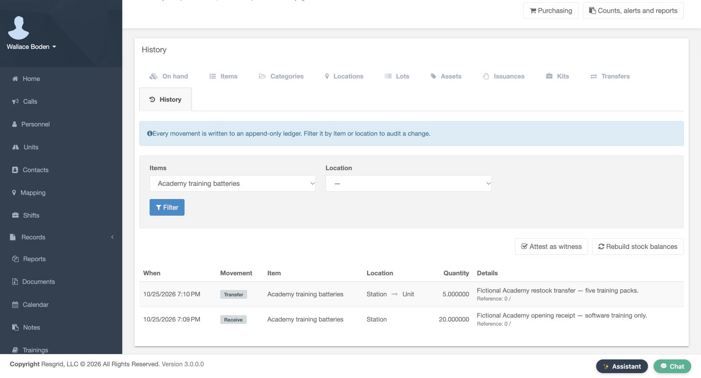
Practice
Find the receipt and transfer rows, compare their amounts and notes, and leave witness/rebuild actions untouched.
Step 8
Issue stock to a named person
Issue equipment reviews two packs from Station for Matthew Casey, together with the expected return date and a training note. Confirm the person and quantity before Issue. The Issuances result shows Personnel, two outstanding, and a Return action. The named recipient was established in the review; this table uses the holder label. Community response and security teams can use that distinction to track supplies signed out to a person.
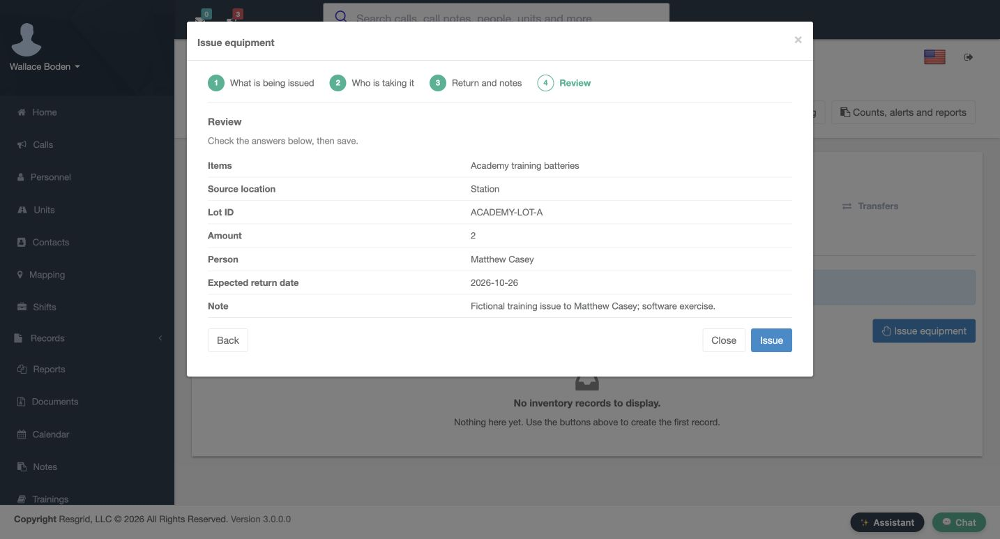
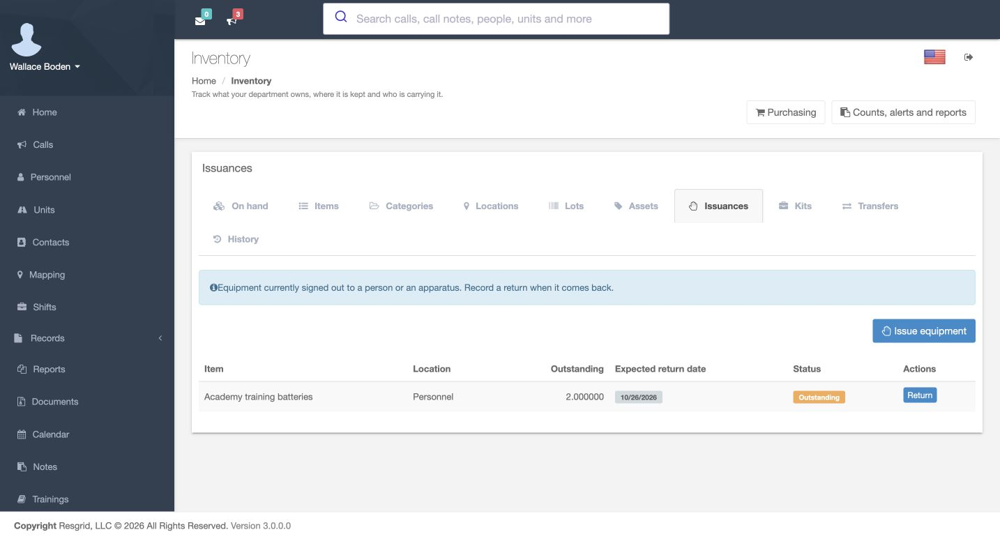
Practice
Compare recipient and amount in the issue review, then verify the resulting outstanding quantity.
Step 9
Recognize a partial return result
A later saved Issuances view shows Partially returned and one pack still outstanding. This is a partial return, not a completed return of everything issued. The Return action remains available for the outstanding balance. Here we review that stored result; the intervening return-entry dialog is not shown. Check the remaining quantity and status instead of treating any return as evidence that the whole issue is closed.
Practice
Read the remaining outstanding amount and status; do not repeat an old return or infer completion of the issue.
Step 10
Reconcile the dated balance snapshot
At this point in the example, the balance table shows fourteen packs at Station, five at Unit, and one at Personnel. Those twenty packs reconcile the receipt, transfer, issue and partial return. These are the quantities in this dated snapshot, before later usage. In your own department, read the current filtered balances and exact holder context rather than copying the demonstration quantities.
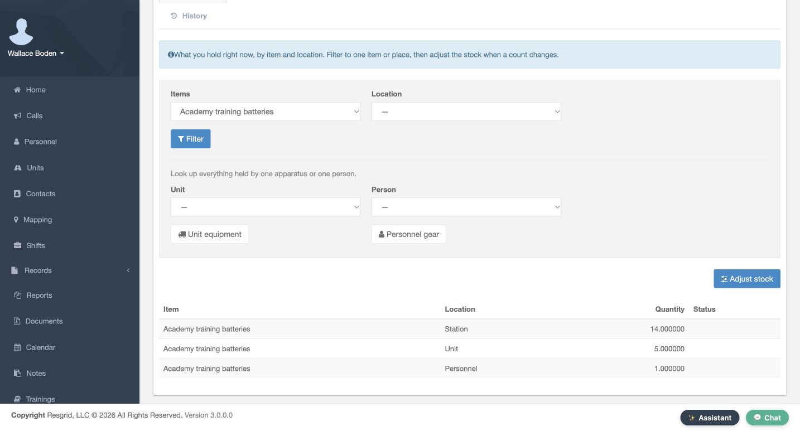
Practice
Reconcile the three displayed balances to the recorded receipt; use your department current data for any operational decision.
Step 11
Read the actual alert state
Counts, alerts and reports contains Inventory alerts. This captured row is a Low stock alert for the training batteries, marked Resolved across All locations. The page also describes expiry and overdue-return alerts, but no expiring-lot result is shown here. Refresh alerts is a separate available action. Read the alert type and status alongside stock data; a resolved alert does not replace a current stock review.
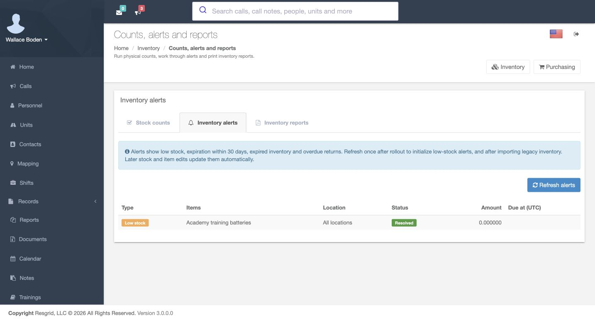
Practice
Read the alert type/status and distinguish this resolved low-stock row from an expiry or overdue-return alert.
Step 12
Choose a report and preserve the workflow boundaries
Inventory reports opens Choose a report with Inventory on hand displayed. Continue leads toward Narrow it down, but this view is the chooser, not a generated report or exported PDF. Fire and EMS administrators, like other services, should verify a report’s scope before relying on its numbers. Keep catalogue setup, recorded movements, stock counts and reporting distinct so that another person can understand what each result actually establishes. The same process supports fire and EMS, community paramedicine and mental health response, search and rescue, security departments and companies, wildland contractors, and industrial emergency response teams.
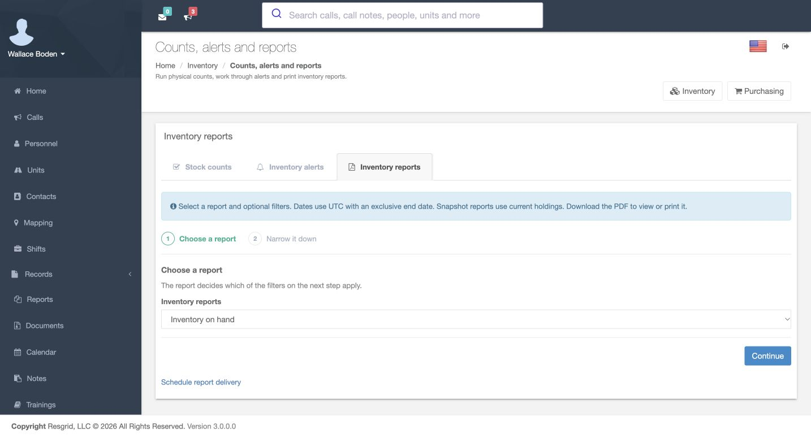
Practice
Identify the displayed report type; obtain and review actual scoped output before claiming a report or export succeeded.
Examples for your department
- Fire / EMS
- An EMS station receives a training consumable and tracks its batch.
- Community response
- A community care coordinator signs supplies out to an individual responder.
- Search and rescue
- A search team stages consumables for a support vehicle.
- Security
- A security team tracks equipment issued to an employee.
- Wildland
- A wildland crew reviews a documented restock.
- Industrial
- An industrial response administrator sets up consumable tracking.
Transcript
Download transcriptRead the complete transcript
Review inventory setup and record stock movements Audience: Inventory administrators, Stock coordinators, Department administrators Locate stock and holders In Core, Inventory separates the item catalogue from what the department currently holds. On hand provides Items and Location filters, while Unit and Person lookups help identify a particular holder. Start by choosing the right item and location before interpreting a quantity. This walkthrough follows one fictional training consumable through recorded software movements, rather than claiming that anyone physically inspected or transported supplies. Practice: Locate the item and holder filters; confirm the intended stock context before changing anything. Choose tracking deliberately The Items tab lists catalogue entries and their Tracking mode and Status. New item opens the catalogue workflow. On How it is tracked, this example uses By quantity with Track lots and Expiration required selected. Controlled substance and Kit item remain off. Decide how an item should be tracked before stock exists; later changes can be restricted. Industrial teams can apply the same distinction to bulk consumables and individually tracked equipment. Practice: Review the displayed tracking choices for an authorized training item; do not enable controlled or kit behavior merely for practice. Review catalogue identity before saving The Review page brings the prepared item together: Academy training batteries, measured in packs, with its code and description. It also shows minimum stock five, reorder point eight, and the fictional unit cost. Read these values before Save. A catalogue entry describes the item; it does not itself receive twenty packs or prove a physical purchase. The next screens use that item in an existing saved lot and stock movement. Practice: Compare the prepared catalogue review with your intended tracking policy before saving; distinguish catalogue setup from receiving stock. Read the saved lot and expiry Lots identifies batches separately from quantities. The saved ACADEMY lot A row belongs to Academy training batteries and displays a November thirtieth expiry. New lot is available for creating another batch, but this view demonstrates the saved row. Check the lot and expiry when recording a movement so that later stock history refers to the intended batch. Creating a lot alone does not add stock. Practice: Read the saved batch identity and expiry; keep lot creation separate from receiving a quantity. Record a reviewed receipt and verify it In Adjust stock, the prepared Review shows Receive, the training item and lot, Station as the destination, and Amount twenty. Its note clearly identifies a software exercise. Read the complete movement and choose Record movement only when it matches the intended receipt. The filtered On hand result then shows twenty packs at Station. That stored balance is the result of the receipt, rather than proof supplied by the preparation screen alone. Practice: Compare the receipt review with the posted item/location quantity before continuing to another movement. Transfer between the intended locations New transfer reviews the same item and lot, with Station as Source location, Unit as Destination location, and Amount five. Confirm both ends before Record movement. A generic location label does not identify a particular apparatus by itself. The Transfers list then shows the saved Station-to-Unit move. Search and rescue or wildland crews can use this pattern for a documented restock, while keeping software movement distinct from actual delivery. Practice: Review both holders and the amount; verify the saved transfer without assuming the generic Unit label names your apparatus. Audit the recorded movement in History History shows the recorded Receive of twenty and Transfer of five for the training batteries. The transfer appears as one visible row with Station pointing to Unit, and its note explains the purpose. Use the item and location filters to understand a change. Attest as witness and Rebuild stock balances are separate controls; this example reads the ledger without invoking either operation. Practice: Find the receipt and transfer rows, compare their amounts and notes, and leave witness/rebuild actions untouched. Issue stock to a named person Issue equipment reviews two packs from Station for Matthew Casey, together with the expected return date and a training note. Confirm the person and quantity before Issue. The Issuances result shows Personnel, two outstanding, and a Return action. The named recipient was established in the review; this table uses the holder label. Community response and security teams can use that distinction to track supplies signed out to a person. Practice: Compare recipient and amount in the issue review, then verify the resulting outstanding quantity. Recognize a partial return result A later saved Issuances view shows Partially returned and one pack still outstanding. This is a partial return, not a completed return of everything issued. The Return action remains available for the outstanding balance. Here we review that stored result; the intervening return-entry dialog is not shown. Check the remaining quantity and status instead of treating any return as evidence that the whole issue is closed. Practice: Read the remaining outstanding amount and status; do not repeat an old return or infer completion of the issue. Reconcile the dated balance snapshot At this point in the example, the balance table shows fourteen packs at Station, five at Unit, and one at Personnel. Those twenty packs reconcile the receipt, transfer, issue and partial return. These are the quantities in this dated snapshot, before later usage. In your own department, read the current filtered balances and exact holder context rather than copying the demonstration quantities. Practice: Reconcile the three displayed balances to the recorded receipt; use your department current data for any operational decision. Read the actual alert state Counts, alerts and reports contains Inventory alerts. This captured row is a Low stock alert for the training batteries, marked Resolved across All locations. The page also describes expiry and overdue-return alerts, but no expiring-lot result is shown here. Refresh alerts is a separate available action. Read the alert type and status alongside stock data; a resolved alert does not replace a current stock review. Practice: Read the alert type/status and distinguish this resolved low-stock row from an expiry or overdue-return alert. Choose a report and preserve the workflow boundaries Inventory reports opens Choose a report with Inventory on hand displayed. Continue leads toward Narrow it down, but this view is the chooser, not a generated report or exported PDF. Fire and EMS administrators, like other services, should verify a report’s scope before relying on its numbers. Keep catalogue setup, recorded movements, stock counts and reporting distinct so that another person can understand what each result actually establishes. The same process supports fire and EMS, community paramedicine and mental health response, search and rescue, security departments and companies, wildland contractors, and industrial emergency response teams. Practice: Identify the displayed report type; obtain and review actual scoped output before claiming a report or export succeeded. Examples for your department Fire / EMS: An EMS station receives a training consumable and tracks its batch. Community response: A community care coordinator signs supplies out to an individual responder. Search and rescue: A search team stages consumables for a support vehicle. Security: A security team tracks equipment issued to an employee. Wildland: A wildland crew reviews a documented restock. Industrial: An industrial response administrator sets up consumable tracking.